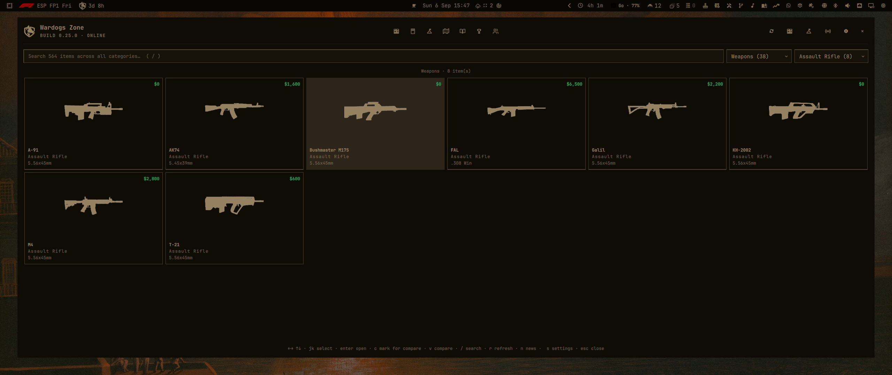
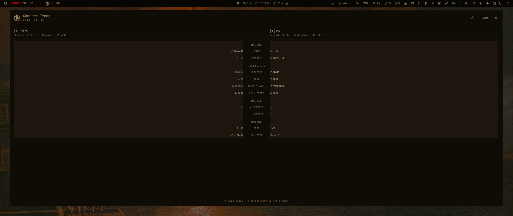
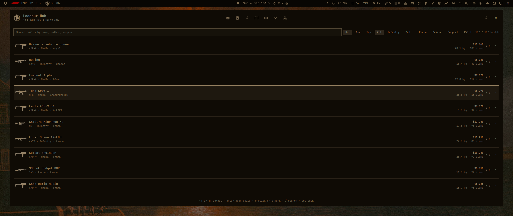
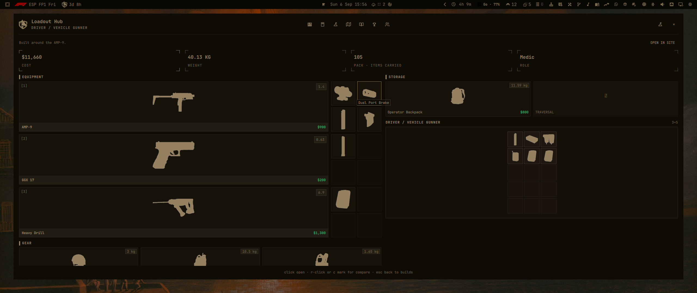
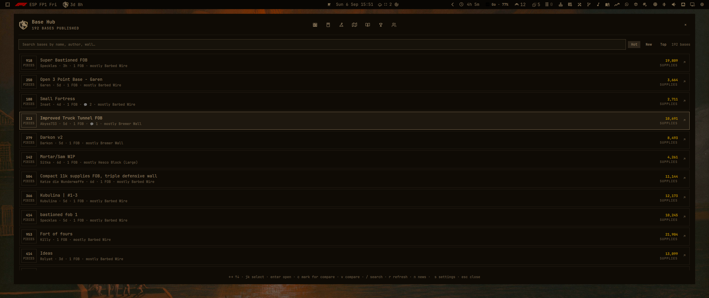
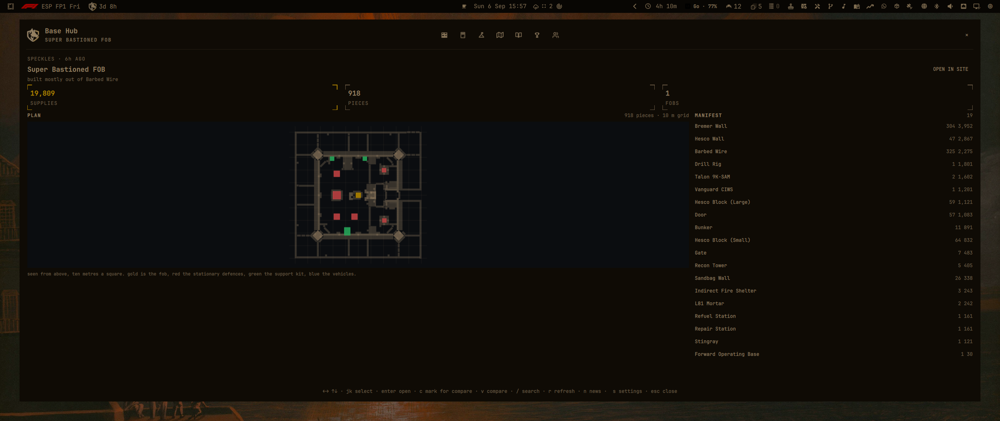

Features
- Armory browser — 565+ items across weapons, ammo, attachments, armor, vehicles, medical and tool categories, with per-caliber filtering and a fuzzy name search.
- Compare — pick two items and diff their stats side by side.
- Loadout hub — the published build list; open any build into a full equipment sheet with gear and backpack grid.
- Base hub — published FOB plans sorted by hot / top / new with search; open a plan into a sheet with the plan canvas and the supply manifest.
- Notifications — the bar pill tracks the live WARDOGS build version and new Wardogs Zone articles.
- Open in the site — every hub item exposes a one-click button to open the page on wardogs.zone.
Screenshots





